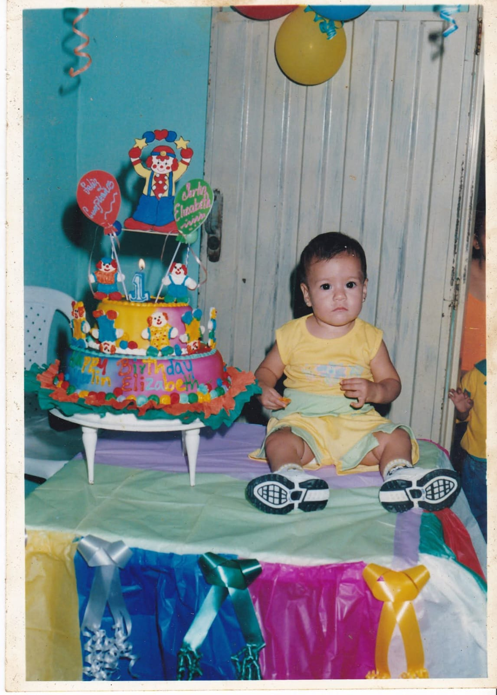
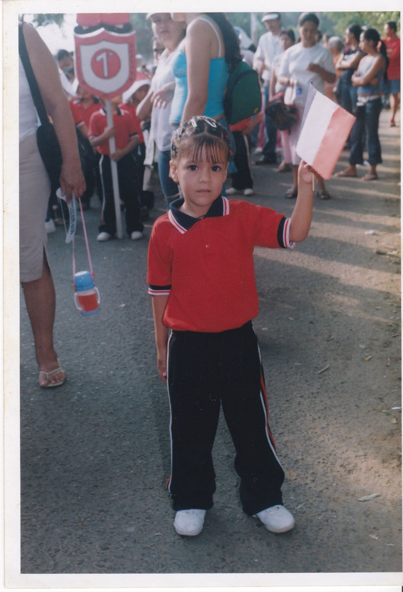
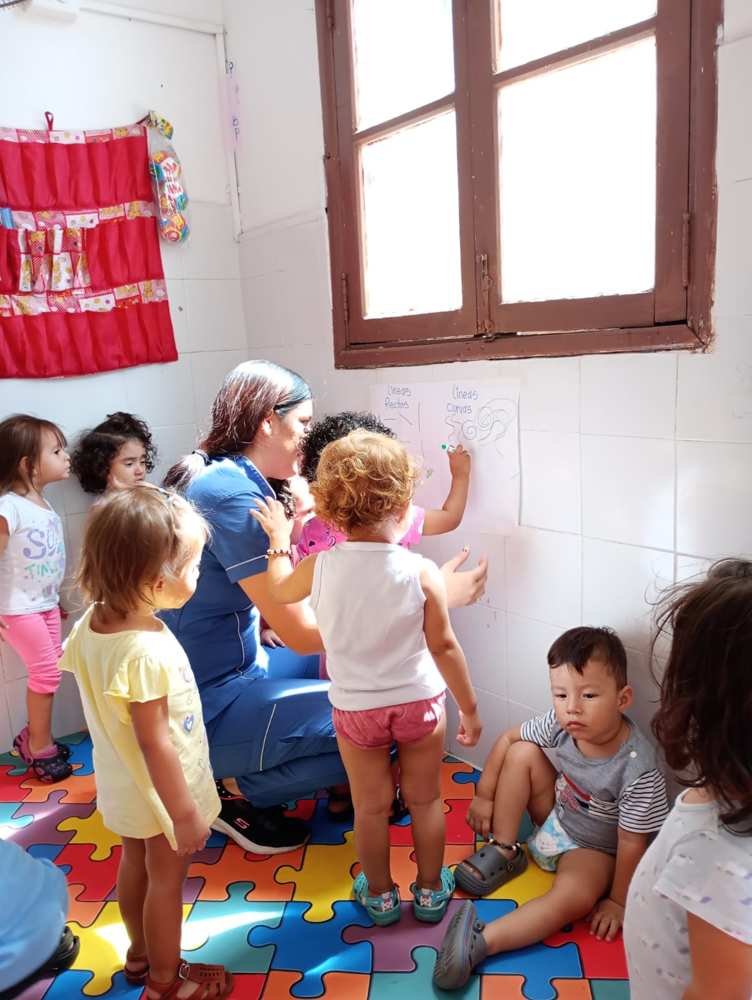

Con esto espero hacer un detalle más, que puedas ver cuando estes en tus dias más grices.
Hola mi Yer si abres esto es porque necesitas recordar lo fuerte que eres entiendo que la vida se pone demasiado dura algo que se torna invivible y gris que hace que nuestros pensamientos sean negativos, es normal lo importante es recordar quienes somos y a donde vamos, sin olvidar nuestra esencia y el porque estamos